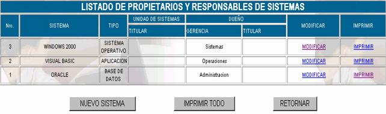
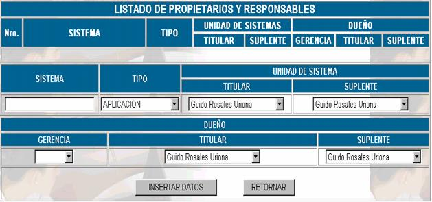

PROPIETARIOS Y RESPONSABLES
Esta opción presente la siguiente pantalla principal

Nro;
especifica el número de sistema que se quiere registrarSistema; especifica el nombre del sistema registrado
Tipo; especifica la clasificación del sistema registrado.

Nuevo sistema;
esta opción presenta la siguiente pantalla principal:Sistema
; Se anota el nombre del Sistema que se registra.Tipo;
la clasificación de tipo se hace en función del manual de procedimientos del departamento de sistema y este puede ser Aplicación, informática, Sistema Operativo, Base de Datos, Utilitarios y varios.Unidad de Sistemas Titular;
se debe establecer el nombre del responsable titular del sistema de la Unidad de sistemasUnidad de Sistemas Suplente;
se debe establecer el nombre del responsable suplente del sistema de la Unidad de sistemas.Dueño Gerencia;
se debe nombrar en el nivel de Gerencia de Sistemas, Auditoria o Legal un dueño, al nombre del cual estará registrado el sistemaDueño Titular;
esta persona es la encargada de comprar o desarrollar el sistema y por tanto su nombre debe figurar en el registro de patente del sistemaDueño Suplente;
esta persona es aquella en caso de faltar el dueño gerencial o el dueño titular se hará cargo de la responsabilidad del sistema.Modificar; para realizar cambios de registro de nombres de responsables, etc, presione sobre el vinculo MODIFICAR y le aparecerían los campos de registro llenados por defecto con los datos del momento de registro cambie el que necesite y presione GUARDAR.
Imprimir; para ver un reporte completo del sistema registrado haga click sobre el vinculo IMPRIMIR y lo obtendrá.